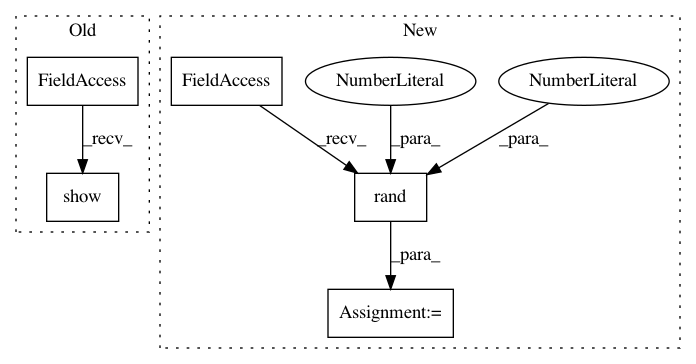

d8fd06cb3e6682ecb4774747b6f46db7a447c2bf,docs/auto_examples/plot_procrustes.py,,,#,21
Before Change
// Before hyperalignment
fig,ax,data = hyp.plot([target, source], show=False, return_data=True)
ax.set_title("Before Procrustes")
plt.show()
// After hyperalignment
fig,ax,data = hyp.plot([hyp.tools.procrustes(source, target), target], ["-","--"], show=False, return_data=True)
ax.set_title("After Procrustes")
After Change
target = data
// A random rotation matrix
rot = np.random.rand(3,3)
// creating new spiral with some noise
source = np.dot(target, rot)
In pattern: SUPERPATTERN
Frequency: 4
Non-data size: 5
Instances
Project Name: ContextLab/hypertools
Commit Name: d8fd06cb3e6682ecb4774747b6f46db7a447c2bf
Time: 2017-05-30
Author: andrew.heusser@gmail.com
File Name: docs/auto_examples/plot_procrustes.py
Class Name:
Method Name:
Project Name: ContextLab/hypertools
Commit Name: 796890caae6caf7999305e59db8999d830d30823
Time: 2017-05-30
Author: andrew.heusser@gmail.com
File Name: examples/plot_procrustes.py
Class Name:
Method Name:
Project Name: ContextLab/hypertools
Commit Name: 73bfb61b1ec6cadb740ba2f91d9d33b7b44487a4
Time: 2017-05-30
Author: andrew.heusser@gmail.com
File Name: examples/plot_procrustes.py
Class Name:
Method Name:
Project Name: ContextLab/hypertools
Commit Name: 40ea9278b8ec4d8d873798ebf2caa96719eaee23
Time: 2017-05-30
Author: andrew.heusser@gmail.com
File Name: docs/auto_examples/plot_procrustes.py
Class Name:
Method Name: